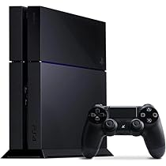

Introduccion

es el nombre de una serie de consolas de videojuegos creadas y desarrolladas por Sony Interactive
Entertainment.
Han estado presentes en la quinta, sexta, séptima, octava y novena generación de videoconsolas; la
compañía
promotora
está actualmente en el mercado con su PlayStation 5.
La marca se introdujo por primera vez el 28 de febrero de 1990 en Japón y ha desarrollado
y
publicado
cinco videoconsolas
de sobremesa, que incluyen un centro de medios de comunicación y un servicio en línea, posteriormente se
introdujeron
revistas y computadoras.
Play Station 1

Historia de la consola
La Play Station 1es la primera videoconsola de sobremesa descontinuada producida por Sony Computer Entertainment. Fue lanzado en Japón el 3 de diciembre de 1994, en América del Norte el 9 de septiembre de 1995, en Europa el 29 de septiembre de 1995 y en Australia el 15 de noviembre de 1995. Como consola de quinta generación, PlayStation compitió principalmente con Nintendo 64 y el Sega Saturn. Sony comenzó a desarrollar la PlayStation después de un acuerdo fallido con Nintendo para crear un periférico de CD-ROM para Super Nintendo Entertainment System a principios de la década de 1990. La consola fue diseñada principalmente por Ken Kutaragi y Sony Computer Entertainment en Japón, mientras que el desarrollo adicional se subcontrató en el Reino Unido. Se puso énfasis en los gráficos de polígonos en tercera dimensión al frente del diseño de la consola. La producción de juegos de PlayStation fue diseñada para ser optimizada e inclusiva, atrayendo el apoyo de muchos desarrolladores externos. La consola resultó popular por su extensa biblioteca de juegos, franquicias populares, bajo precio minorista y marketing juvenil agresivo que la anunciaba como la consola preferible para adolescentes y adultos. Las franquicias Premier de PlayStation incluyeron Gran Turismo, Wipeout, Crash Bandicoot, Spyro, Tomb Raider, Resident Evil, Metal Gear Solid, Tekken, y Final Fantasy, todas las cuales generaron numerosas secuelas.
Descripcion de la Consola
Forma: Tiene la forma de un prisma rectangular de color gris y destaca por su diseño compacto y ligero. Con el lanzamiento de la PSOne, la PlayStation redujo aún más su tamaño y peso, los bordes extremos se curvaron más y el color fue un gris más claro en comparación con el original. La PlayStation One o "PSOne" fue la segunda versión de la PlayStation. Parte superior: Allí está el lector de discos, se ubican los botones de encendido y apagado y el de reinicio (reset), por último está el botón para abrir la tapa del lector de CD. En la versión PlayStation One, el botón de reinicio es corregido tal como se conoció en el original PlayStation y este botón es reubicado en la parte de encendido. Parte frontal: En la parte frontal de la consola, está un par de ranuras para conectar los mandos y en la parte superior se ubican dos ranuras para insertar las Tarjetas de Memoria (Memory Cards en inglés). En la quinta generación de videojuegos, aparecieron muchos juegos largos; ya fue un requisito tener las tarjetas de memoria para guardar los avances de los juegos o cualquier personalización de un juego. Parte trasera: En ese lugar está un puerto paralelo (que Sony eliminó en las últimas versiones de la consola, presuntamente para combatir la piratería de sus juegos porque existen accesorios que, una vez conectados al mismo, permiten eludir las protecciones del sistema y ejecutar juegos no originales), un puerto serie, la entrada de alimentación y la salida de A/V. Al quitarla, pensaron que consiguieron combatir la piratería, lo que no funcionó y se pudo combatirla por otros sistemas (por el implante de chips o conexión de cables internos, eso en caso de que el chip fue compatible con todos los juegos piratas). Partes laterales: La consola tiene unas pequeñas rejillas de ventilación que permiten la disipación del calor. Se recomendó dejar las partes laterales libres de algún objeto que obstruya la ventilación para así evitar los sobrecalentamientos. Parte inferior: En la parte inferior hay unas rejillas de ventilación; también se ubican los tornillos que sujetan la carcasa y finalmente, están las etiquetas de información de la consola.
Ficha Tecnica
Procesador: R3000A, de 32 bits RISC con una frecuencia de reloj a 33,8688 MHz. Fue desarrollada por LSI Logic Corp con tecnología licenciada de Silicon Graphics y contiene, en el mismo chip, el Motor de Transferencias Geométricas y el Motor de Descompresión de Datos Capacidad de cálculo de 30 MIPS Ancho de banda del bus de 132 megabytes por segundo Caché de instrucciones de 4 kilobytes Caché de datos de 1 kilobytes Motor de Transferencias Geométricas (GTE): Está dentro del chip del procesador; es el encargado de la renderización de los gráficos tridimensionales Capacidad de cálculo: 66 MIPS Capacidad de procesamiento gráfico: 360.000 polígonos de sombreado plano por segundo. 180.000 polígonos con mapeado de texturas por segundo.31 Motor de Compresión de Datos: También ubicado dentro del chip del procesador; es el responsable de la descompresión de la información de los juegos Compatible con archivos MPEG-1 y H.261 Capacidad de cálculo: 80 MIPS Directamente conectado al bus de la CPU (computadora) Procesador gráfico: separada del procesador; se encarga de procesar toda la información de gráficos en dos dimensiones. Paleta de colores: 16.700.000 colores Resoluciones: desde 256×224 hasta 640×480 Frame Buffer ajustable Tablas de búsqueda de colores ilimitadas Capacidad de procesamiento gráfico: 4000 sprites de 8×8 píxeles, con escala y giro individual Puede manejar entornos simultáneos Puede hacer sombreado plano o sombreado Gouraud, y mapeado de texturas Unidad de procesamiento de sonido (SPU): Encargado de procesar el sonido Puede manejar fuentes ADPCM con 24 canales y hasta 44,1 kHz Puede procesar efectos digitales como: Modulación de tono (Pitch) Cubierta Enlace Reverberación digital Puede procesar hasta 512 kilobytes de muestras waveforms Soporte para instrumentos MIDI Memoria: Memoria RAM central: 2 MB Memoria RAM de vídeo: 1 megabyte Memoria RAM de sonido: 512 kilobytes Buffer para CD-ROM: 32 kilobytes Memoria ROM del BIOS: 512 kilobytes Tipo y capacidad de las tarjetas de memoria estándar (Memory Card): EEPROM de 128 kilobytes Unidad de lectura de CD-ROM: Velocidad de lectura de 2 veces (300 kilobits por segundo como máximo en transferencia de datos) Compatible con el formato CD-XA
Play Station 2

Historia de la Consola
Fue lanzada por primera vez el 4 de marzo del año 2000 en Japón, y unos meses después en el resto del mundo. Es la videoconsola más vendida de la historia, con unos 155 millones de unidades vendidas.345 El 4 de enero del año 2013 se decide detener su fabricación tras 13 años de actividad.6 A pesar del anuncio, se continuaron produciendo nuevos juegos para la consola hasta finales de 2013, estos fueron FIFA 14 y Pro Evolution Soccer 2014. En total llegó superar la cifra de más de 4000 títulos en su catálogo.
Descripcion de la Consola
Tres de los modelos del lanzamiento original de la PlayStation 2, que se vendieron solo en Japón, carecían del puerto de expansión Dev9 de los modelos actuales. Estas versiones fueron SCPH-10000, SCPH-15000 y SCPH-18000. Estos modelos incluían una ranura PCMCIA en lugar de la bahía de expansión (Dev9), encontrada en modelos más recientes. Un adaptador PCMCIA a Dev9 fue lanzado para estos modelos. SCPH-10000 y SCPH-15000 no tenían un reproductor de DVD incorporado y en su lugar confiaban en un reproductor cifrado que se copiaba a una tarjeta de memoria desde un CD-ROM. La V3 tiene una estructura interna bastante diferente a las revisiones subsecuentes, presentando varias tarjetas de circuitos interconectadas. En la V4 todo estaba unido en una sola tarjeta (excepto la fuente de alimentación). La V5 introdujo cambios menores, y la única diferencia entre la V5 y la V6 (también conocida como V5.1) es la orientación del interruptor de encendido/reinicio, el cual fue invertido para evitar la instalación de los modchips sin soldar. Las V7 y V8 son similares. El ensamblado de la PlayStation 2 se mudó a China con el modelo V9 (SCPH-50000 o SCPH-50001), que añadió el puerto infrarrojo para el control remoto opcional, suprimió el puerto FireWire, añadió la capacidad de leer los discos DVD-/+RW, añadió el escaneo progresivo para las películas en DVD y un ventilador mucho más silencioso.
Ficha Tecnica
Procesador18 CPU "Emotion Engine". GPU "GraphicsSynthesizer". Graphics Synthesizer hasta la versión SCPH39000. El Adaptador de Conexión Ethernet para PS2. (Solo para el modelo original grande de la consola). Este accesorio no es necesario para los modelos delgados (slim) de la consola, puesto que el puerto ethernet lo llevan integrado en la propia consola. CPU: Emotion Engine (EE) RISC MIPS-IV (R5900) de 64 bits con capacidades SIMD de 128 bits19 Frecuencia de reloj del Sistema: 294.912 MHz (299 MHz a partir de la Versión V9). Acumulador Multiplicador de Coma Flotante (FMAC) x 1 Divisor de Coma Flotante (FDIV) x 1 8 KB Caché (4 KB Instrucciones + 4 KB Datos) Co-Procesador 2: VU0 Acumulador Multiplicador de Coma Flotante (FMAC) x 4 Divisor de Coma Flotant (FDIV) x 1 8 KB Caché (4 KB Instrucciones + 4 KB Datos) Unidad de Procesado Vectorial: VU1 Acumulador Multiplicador de Coma Flotante (FMAC) x 5 Divisor de Coma Flotante (FDIV) x 2 24 KB Caché (16 KB Instrucciones + 8 KB Datos) 16 KB Scratch Pad RAM Ancho de banda del Bus de memoria: 128 bits DMA con 10 canales Memoria 32 megabytes RAMBUS DRAM (128mb en modelos DTL-T10000) Ancho de 32 bits (16 bits en Dual Channel) 400 MHz (800 MHz efectivos) 800 megabits por segundo por pin Ancho de Banda de 3.2 gigabytes por segundo Prestaciones Rendimiento en coma flotante: 6.5 GFLOPS Transformación Geométrica 3D: 6 600 000 polígonos/s Decodificador de compresión de imagen: MPEG2 Procesamiento de superficies (Bezier): 16 000 000 de polígonos/s Procesamiento de imágenes: 150 000 000 de píxeles/s Transformación de perspectivas: 66 000 000 de polígonos/s Iluminación: 38 000 000 de polígonos/s Partículas: 36 000 000 de polígonos/s 512 Pixel Pipelines 32.5 gigapixeles por segundo (sin texturas) 500 gigatexeles por segundo Filtro por Punto, Bilinear, Trilinear, Anisotrópico y Mip-Map Corrección de Perspectiva de Mapeado de Texturas Bump Mapping Environment Mapping 512-bit Color (RGBA) 512-bit Z Buffer 4 MB VRAM eDRAM de ancho de banda de 38.4 gigabytes por segundo (19.2 GB/s en cada dirección) eDRAM de ancho de banda de Texturas de 9.6 gigabytes por segundo 150 000 000 de partículas por segundo Tasa de Pintado de Polígonos: 500 000 000 de polígonos por segundo (polígono pequeño) 500 000 000 de polígonos por segundo (cuadrado de 48-pixel con Z y Alpha) 500 000 000 de polígonos por segundo (triángulo de 50-pixel con Z y Alpha) 500 000 000 de polígonos por segundo (cuadrado de 48-pixel con Z, Alpha, y Texturas) 500 000 000 de sprites por segundo (8 × 8 pixel sprites)
Play Station 3

Historia de la Consola
Sony confirmó, en marzo de 2017, que dejaría de fabricar la consola en Japón.5 En la cual finalmente se dejó de hacer su producción el 29 de mayo de 2017, así mismo finalizando su producción únicamente en Japón en 2017, en Nueva Zelanda en el 2015, en Estados Unidos en marzo de 2016 y el resto de Norteamérica en octubre de ese año, pero la producción alrededor del mundo sigue presente, exceptuando su servicio en línea que igual está presente, a excepción de algunos servidores de ciertos títulos que ya cesaron su servicio en línea, unos ejemplos de juegos que ya han cesado servicios en la consola serían PES 2015 y más recientemente Grand Theft Auto Online.6 El firmware de la consola es el 4.91 lanzado recientemente este 27 de febrero del 2024 y el último juego lanzado para esta consola de manera oficial fue FIFA 19.
Descripcion de la Consola
Hay cinco modelos originales de hardware de la PlayStation 3 que son comúnmente mencionados por el tamaño incluido de su unidad de disco duro: "20 GB", "40 GB", "60 GB", "80 GB" y "160 GB". El modelo, de 20 GB únicamente ha sido distribuido en Estados Unidos y en Japón, donde ya se ha dejado de fabricar debido a sus bajas ventas, por lo que no llegó a Europa. El modelo incluye un disco duro SATA 2,5" de 20 GB, y además, un conector HDMI 1.3 que antes se podía encontrar solo en el modelo estándar.47 Por otro lado, Sony tiene previsto vender un lector de tarjetas de memoria y un adaptador Wi-Fi externo para este modelo. No obstante, estos agregados aún no han sido liberados.48 Sin embargo, este modelo ofrece cuatro puertos USB 2.0, así como ranuras de expansión para las tarjetas de memoria.
Ficha Tecnica
CPU Cell Broadband Engine 3,2 GHz con 1PPE y 8 SPEs GPU NVIDIA/SCEI RSX 550 MHz RAM 256 MB de RAM de tipo GDDR3 VRAM a 700 MHz con ancho de banda de 128 bits y 256 MB Rambus XDR DRAM a 3.2 GHz con un ancho de banda de 64 bits. Dimensiones Aproximadamente 230 × 60 × 290 mm (ancho × alto × largo)[nuevo modelo super slim] Resolución 1080p, 1080i, 720p, 480p, 480i Almacenamiento Cualquier disco duro SATA de 2,5" Pulgadas y un máximo de 10 mm de altura. Recomendado 5200rpm para disminuir el calor generado. Sonido LPCM 7.1ch, Dolby Digital, Dolby Digital Plus, Dolby TrueHD, DTS, DTS-HD, AAC. Detección de movimiento PSMove Soporte Discos Blu-ray 2x, DVD 16x, CD 52x Control Dualshock 3 Sixaxis Botones D-Pad, 2 × sticks analógicos, Triángulo, Círculo, Cruz, Cuadrado, L1, R1, R2, L2, R3,L3, Start, Select, Home-Encendido Conectividad inalámbrica Ethernet (10BASE-T, 100BASE-TX, 1000BASE-T). EEE 802.11 b/g (Wi-Fi). Bluetooth ® 2.0 (EDR) Operaciones en coma flotante 400.4 GFLOPS (RSX) - 230.4 GFLOPS (CELL BE)
Play Station 4
Historia de la Consola
A principios de 2013, Sony anunció que un evento llamado PlayStation Meeting 2013 serviría para dar a conocer el «futuro de Playstation».1516171819 El 20 de febrero de 2013 dicho evento que tuvo lugar en Nueva York y que duró cerca de dos horas la compañía dio a conocer la sucesora de la PlayStation 3.9 El anuncio fue ofrecido en directo a través de Ustream.9 Game Developers Conference 2013 (San Francisco, EE. UU.) Artículo principal: Game Developers Conference En la conferencia GDC del año 2013, Sony presentó nuevos detalles sobre los videojuegos y características de la PlayStation 4.20 Entre los videojuegos mostrados se incluyen: Primal Carnage Genesis, Blacklight: Retribution, Battlefield 4, Assassin's Creed IV: Black Flag, Watch Dogs y Metal Gear Solid: Ground Zeroes.21 Electronic Entertainment Expo 2013 (Los Ángeles, EE. UU.) Artículo principal: Electronic Entertainment Expo Personas fotografiando la videoconsola PS4 en el E3 2013 El día 10 de junio de 2013, a las 18:00 (Pacific Time) Sony realizó una conferencia, en la que se dieron más detalles, entre ellos el diseño, el precio de la PlayStation 4.22 Algunos detalles que se revelaron fueron que la videoconsola podría reproducir videojuegos usados, mientras sean originales y no necesitaría conexión a Internet para poder jugar. Finalmente, la presentación concluyó con el precio, que resultó siendo 399 dólares, 349 libras y 399 euros, lo que impresionó mucho, debido a que su competencia, Xbox One costaría 499 dólares estadounidenses, 429 libras y 499 euros.23
Descripcion de la Consola
El 7 de septiembre de 2016, Sony anunció una revisión de hardware de PlayStation 4, cuyo modelo es la CUH-2000 y nombrada no oficial como PlayStation 4 Slim. Es una revisión del hardware de PS4 original con algunas correcciones y tamaño más pequeño. Tiene un cuerpo redondeado con un acabado mate en la parte superior de la consola en lugar de un acabado de dos tonos y es un 40% más pequeño en tamaño que el modelo original. Los dos puertos USB en la parte delantera tienen un mayor espacio entre ellos y el puerto de audio óptico se ha eliminado. La principal mejora con respecto a la original radica en que el modelo CUH-2000 consume menos energía eléctrica que el modelo original, debido a esto, se calienta menos y consecuentemente el ventilador de la consola no necesita girar tan rápido la mayoría del tiempo, lo que ocasiona que el modelo CUH-2000 haga mucho menos ruido que la original.88 Fue lanzada el 15 de septiembre de 2016, con un modelo de 500 GB al mismo precio que el modelo original.89 Además, también está disponible con 1 TB de capacidad de disco duro.
Ficha Tecnica
La videoconsola PS4, dispone de un microprocesador tipo APU de ocho núcleos x86-64 a 1.6 GHZ fabricado por AMD bajo el nombre en clave Liverpool, basado en la arquitectura Jaguar. Una GPU AMD 787032 con una potencia de procesamiento de 1,84 Teraflops, que puede dedicarse a diferentes tareas que no sean exclusivamente gráficas.33 Cuenta también con una memoria RAM unificada de 8 GB, GDDR5, con un ancho de banda de 176 GB/segundo.34 A finales de agosto de 2013, Marc Diana, responsable de marketing de producto de AMD, afirmó a la prensa especializada que PS4 soporta acceso a memoria hUMA35 (UMA heterogéneo), que permite acceder a los dos componentes de la APU, CPU y GPU, a las mismas posiciones de memoria de manera simultánea mediante el uso de cachés coherentes.36 Si bien AMD desautorizó las declaraciones de Diana, no las desmintió. Si bien se desconocía el tipo de disco duro, la capacidad sería en el modelo ya anunciado de 500GB,37 se supo que la unidad óptica admitiría Blu-ray 6x y DVD 8x. En materia de conectividad la consola contaría con Ethernet (10BASE-T, 100BASE-TX, 1000BASE-T), 802.11 b/g/n y Bluetooth 2.1 (con EDR).38 Ofrecería puertos HDMI, salida óptica digital y USB 3.0(2X).38
Play Station 5
Histria de la Consola
popular arquitecto principal de la línea de consolas PlayStation, Mark Cerny, implementó un ciclo de retroalimentación de dos años después del lanzamiento de PlayStation 4. Esto implicó visitar regularmente a los desarrolladores propios de Sony en intervalos de dos años para averiguar qué preocupaciones tenían con las deficiencias en el hardware actual de Sony y cómo se podría mejorar dicho hardware. en actualizaciones de consola o para la próxima generación. Esta retroalimentación se incorporó a las prioridades del equipo de desarrollo de la consola. En el desarrollo de PlayStation 5, un problema clave fue la duración de los tiempos de carga de los juegos. Esto se basa en el tamaño de los datos que se cargan en el juego, la ubicación física de los datos en el medio de almacenamiento y la duplicación de datos en el medio para reducir los tiempos de carga. Un objetivo importante era encontrar formas de reducir el tiempo de carga.3 Jim Ryan, CEO de Sony Interactive Entertainment, declaró que Sony había investigado la viabilidad de una versión de PlayStation 5 de "bajo precio y especificaciones reducidas", como lo que Microsoft había hecho con su Xbox Series X y su contraparte de menor potencia, la Xbox Series S; y concluyeron que creían que tales consolas no funcionaban bien y se volvían obsoletas demasiado rápido.4